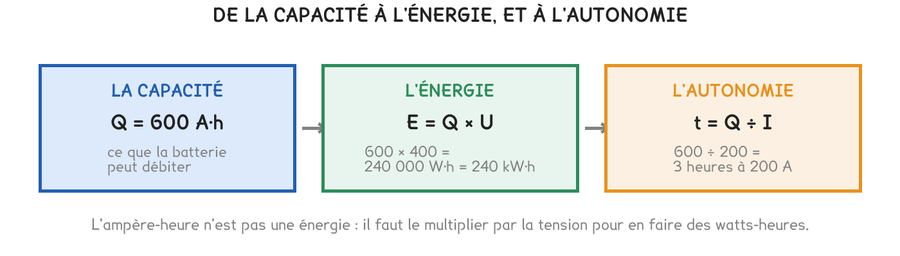

Tle Bac Pro CTRM
Deux batteries de 200 A·h. L'une stocke quatre fois plus d'énergie que l'autre. Rien sur l'étiquette ne le dit, et c'est la faute la plus chère du métier.
3 exercices · 30 items d'entraînement · 1 repli · 2 figures
Savoirs travaillés

La capacité Q, en ampères-heures (A·h) — ce que la batterie peut débiter
L’énergie stockée : E = Q × U, en wattheures (W·h)
La durée avant décharge : t = Q ÷ I, en heures
L’ampère-heure n’est pas une énergie. C’est la faute la plus fréquente du métier, et elle se paie sur un devis. Deux batteries de 600 A·h ne stockent pas la même énergie si leurs tensions diffèrent.
Reprenons l’accumulateur du banc, et vidons-le complètement sous un courant qu’on maintient constant. Tout se lit sur la courbe, et les trois grandeurs tombent l’une après l’autre.
Deux batteries de 200 A·h :
Quatre fois plus, pour la même capacité affichée.
L’ampère-heure compte des charges, pas de l’énergie. Il dit combien d’électricité la batterie peut faire circuler, jamais avec quelle force. C’est la tension qui apporte la force — et le produit des deux seulement fait une énergie.
t = Q ÷ I
600 A·h sous 200 A → 600 ÷ 200 = 3 heures
Q ÷ I donne des heures, pas des minutes. Un élève qui trouve « 3 » et écrit « 3 minutes » se trompe d’un facteur 60 sans s’en apercevoir. Écrivez l’unité avant de faire le calcul, à chaque ligne.
0,67 heure ne fait pas 67 minutes. Pour passer un dixième d’heure en minutes, on multiplie par 60 : 0,67 × 60 ≈ 40 minutes. Cette conversion se rate une fois sur deux, et elle revient dans le problème de la recharge au dépôt.
Pour aller plus loin
Si l’ampère-heure ne dit rien de l’énergie, pourquoi est-ce lui qui figure sur toutes les étiquettes ?
Parce qu’il est plus grand. Une batterie de téléphone annoncée « 4 500 mA·h » sonne mieux que « 17 wattheures », qui est pourtant la même batterie. Le nombre est deux cent cinquante fois plus gros.
Et parce qu’il ne se compare pas. Tant que le client raisonne en ampères-heures, il ne peut pas mettre deux produits de tensions différentes côte à côte. C’est exactement le mécanisme du débit annoncé en bits plutôt qu’en octets.
La parade tient en un geste : multipliez toujours par la tension avant de comparer. Deux nombres en wattheures se comparent ; deux nombres en ampères-heures, non.
Exercice · ELEC
La batterie du tracteur fait 600 A·h sous 400 V. Quelle énergie stocke-t-elle, en kilowattheures ?
Exercice · ELEC
Un hayon consomme 60 A. Pendant combien d’heures une batterie de 220 A·h peut-elle l’alimenter ?
Exercice · ELEC
Un vendeur affirme : « la batterie de la perceuse fait 5 A·h et celle du téléphone 4,5 A·h — elles se valent presque. » A-t-il raison ?
On remplit chaque case, puis on vérifie la série entière d’un coup.
Série · ELEC
Série · ELEC
Série · ELEC
Série · ELEC
Série · ELEC
| E = Q × U, en wattheures | l’ampère-heure seul ne dit rien de l’énergie |
| t = Q ÷ I, en heures | 0,67 h fait 40 minutes, pas 67 |
| Pour comparer deux batteries | multipliez d’abord par la tension |
Cette page détaille la séance 3 de la séquence. Elle ne remplace pas les documents distribués et ne donne aucun corrigé.